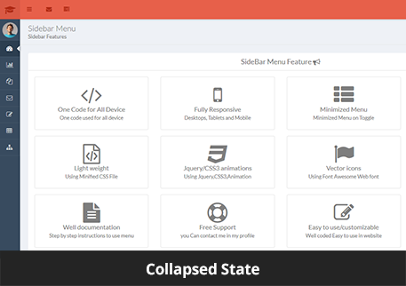
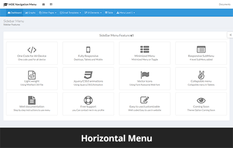
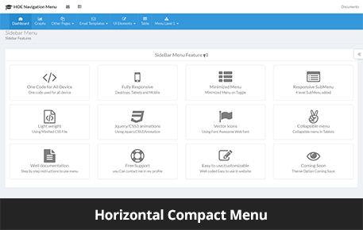
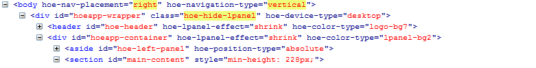
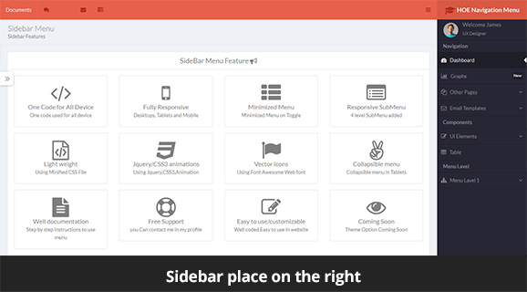
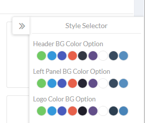

Navigation Features
- Design & Developed to supports any device using latest Bootstrap framework.
- Multiple levels
- 100% Responsive and Mobile Friendly
- Vertical Navigation with both Left/Right Sidebar Support
- Create your own theme with theme options
- 11 Effects for both Vertial and Horizontal Menu
How to Use?
Here are described varios ways of using this sidebar, you can read and adapt them to your website's requeriments. Below are described all options with details.
Simplest Usage - Default HTML Code
Files to Include
Side Bar Effects
Here are described varios ways on how we can apply effects on sidebar. The sidebar supports PUSH/OVERLAY/SHRINK, you can read and adapt them to your website's requeriments. Below are described all options with details.
1. PUSH Effect
This demonstrates the push effect in which the content slides to the right making space for the left sidebar
To use this effect you need to add the attribute hoe-lpanel-effect="push". Please see the below image where you can see the attribute highlighed in yellow.
2. Overlay Effect
This demonstrates the overlay effect in which the left sidebar overlays the content area.
To use this effect you need to add the attribute hoe-lpanel-effect="overlay". Please see the below image where you can see the attribute highlighed in yellow.
3. Shrink Effect
This demonstrates the shrink effect in which the left sidebar is on collapsed state to provide more space to the content area. By default this effect is being used.
To use this effect you need to add the attribute hoe-lpanel-effect="shrink". Please see the below image where you can see the attribute highlighed in yellow.
Navigation Menu Types
We have provided 4 types of Navigations Vertical(Sidebar) and Horizontal.
- Vertical Sidebar Expanded State
- Vertical Sidebar Collapsed State
- Horizontal Menu Full Menu
- Horizontal Menu Compact Menu
1. Vertical Sidebar Expanded State
This demonstrates the sidebar in expanded state.
By default the Sidebar is in expanded state.

2. Vertical Sidebar Collapsed State
This demonstrates the sidebar in collapsed state.
To use this view you need to add the attribute hoe-navigtaion-type="vertical-compact" on the body. Also you need to add class="minimized=lpanel" on #header and "#theme-container">
Please see the below image where you can see the attributes and classes highlighed in yellow.
Collapsed Sidebar State shown below
3. Horizontal Menu Full
This demonstrates the horizontal menu which will be display between the content area and header area.
To use this view you need to add the attribute hoe-navigtaion-type="horizontal" on the body.
Please see the below image where you can see the attributes and classes highlighed in yellow.
Horizontal Menu shown below
4. Horizontal Menu Compact
This demonstrates the horizontal menu in compact state.
To use this view you need to add the attribute hoe-navigation-type="horizontal"on the body and add class "compact-hmenu" on #hoeapp-wrapper.
Please see the below image where you can see the attributes and classes highlighed in yellow.

Horizontal Menu shown below
Sidebar Placement
We have provided two Sidebar options.
- Sidebar on the Left
- Sidebar on the Right
1. Sidebar on the Left
By default the Sidebar is on the left side.
2. Sidebar on the Right
To use this view you need to add the attributehoe-nav-placement="right", hoe-navigation-type="vertical"on the body.
Please see the below image where you can see the attributes and classes highlighed in yellow.

Sidebar Menu on the right shown below
Color Themes
The Navigation comes with various color options. A user can customize the colors as per his/her convenience for header and navigation
Color theme options shown below
